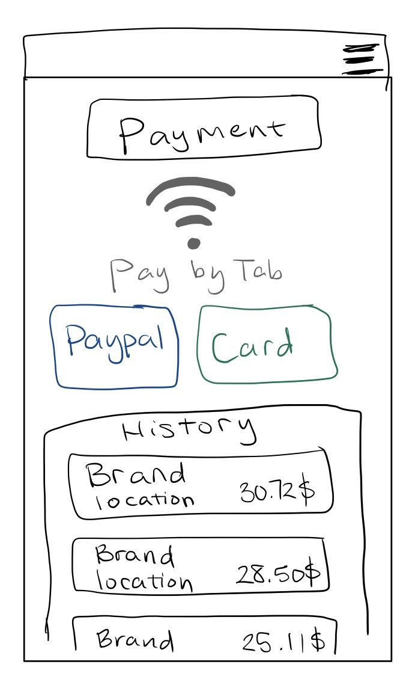
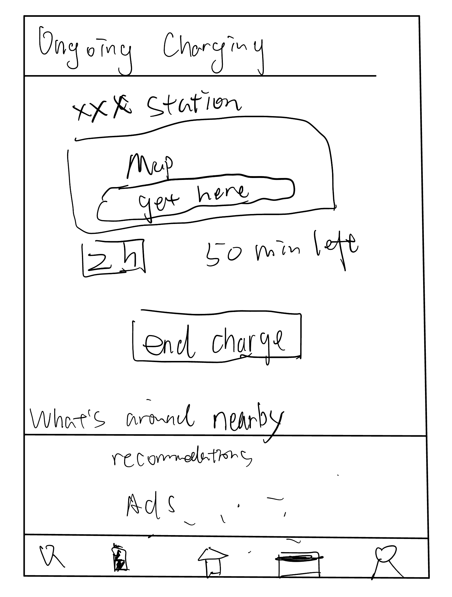

Project Overview
In this project, we went through the full process of mocking up a solution to the startup's concept.
We choose AeonCharge as our startup. It is an app designed for electric vehicle drivers to find and pay for a charger in the US.
The application's primary purpose would be to integrate different networks and provide a coherent service.
Our exemplifications for the iterative process flow include sketching initial ideas and combining them into wireframes, creating an interactive high-fidelity mockup, collecting and incorporating feedback,
and having test users try out on UserTesting.com.
- Project Goal: Go through the full process of designing an app for a startup's concept
- Tech Stack: Figma, Balsamiq
- Website URL: Website Link
Sketches
Here are our four sets of sketches:






Wireframe
Here is our set of wireframes:
User Testing
Overview
Basically, the user experience was what we expected, they could explore how to use the app by common sense and
the process is straight. But there was some confusion in the beginning because the user was not familiar with
how to click on Figma and the task was not obvious. And users are not used to operating mobile apps on
computers.
Task Result
- They can find filters in the search interface, and the filter information is clear and convenient.
- For the promotions, both users found the correct icon and found it quick and convenient, while one user was
unsure of its function but also showed the promotion in search and the station page. She thinks there should
also be a discount option on the filter interface.
- Users have successfully used common sense to find out how to edit personal information and settings through
the hamburger button.
- User completion is not ideal for finding an order in progress. Although the page was found, the button
didn't provide enough information to click (they probably thought it was a logo). A user chose to find an
Order in progress through Order history.
- The overall process was clear, but one user said the process was not clear because the task instructions
were not in a clear order.
Pros
- "I like that I can fid charging stations on the map very clear."
- "Very clean, simple and easy to use interface. Looks professional."
- "New, and offering great data."
- The personal settings interface is clear and straightforward, and the hamburger button helps a lot.
Cons
- It is not clear that estimate total because there is no way to determine the actual amount (but the amount
depends on the time).
- On the search page it would be nice if it could display a numeric sort on the left.
- The order in progress is not visible enough to determine whether to click.
- The page is not friendly and some of the information is not very straightforward.
Improvement
- The search results screen displays the sorted number of each charging station.
- The filter should also offer a choice of whether there is a deal or not.
- The coupon button is not obvious, try to change it to the mailbox message button and put the offer push
inside, while also receiving other messages
- The ongoing charging button does not determine if there is an ongoing order, which is more obvious by using
a small red-circled number on the side.
- Consider placing the ongoing charging in the lower left corner and the app logo in place.
- The search bar could be larger for users to use while driving.
- The pins on the map should provide thumbnail information when clicked.